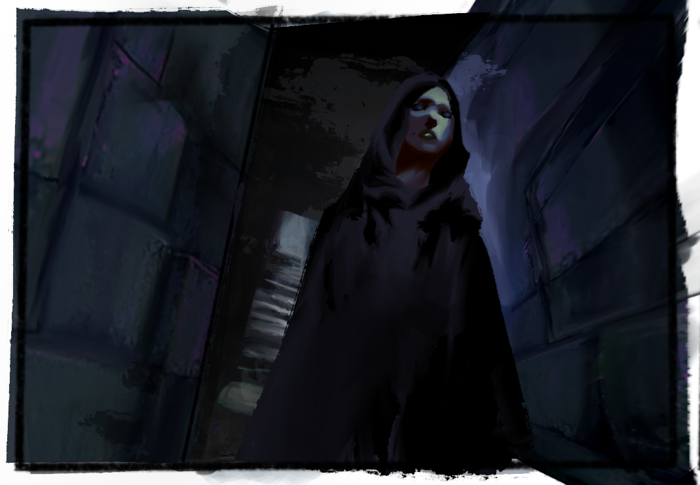
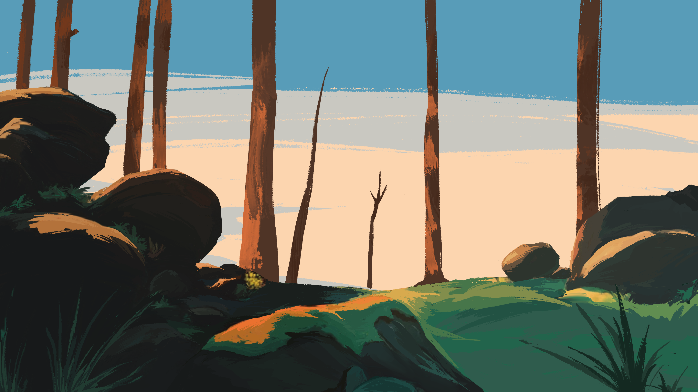
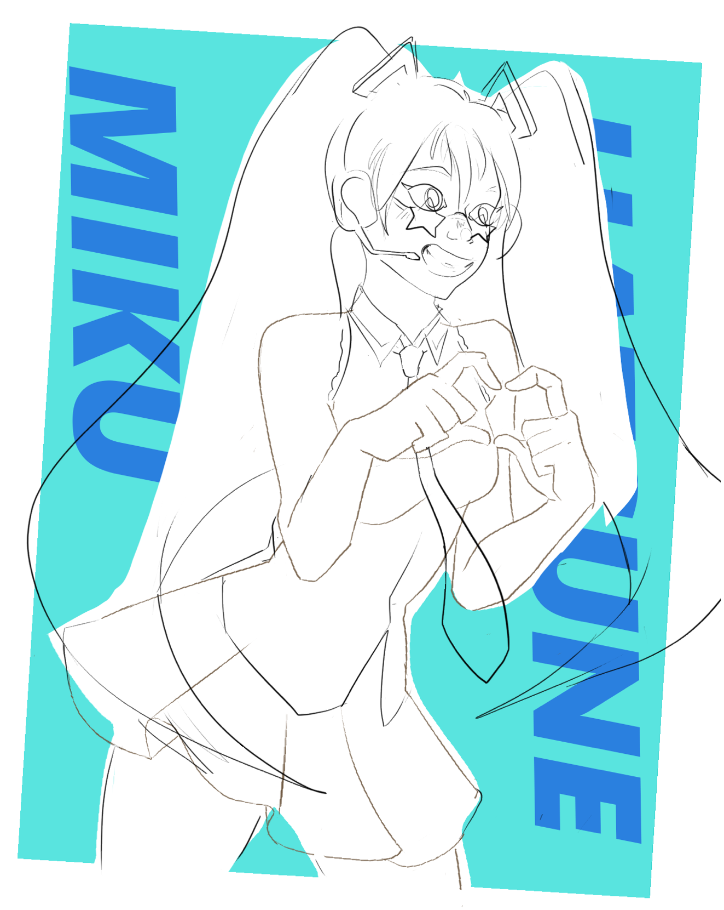
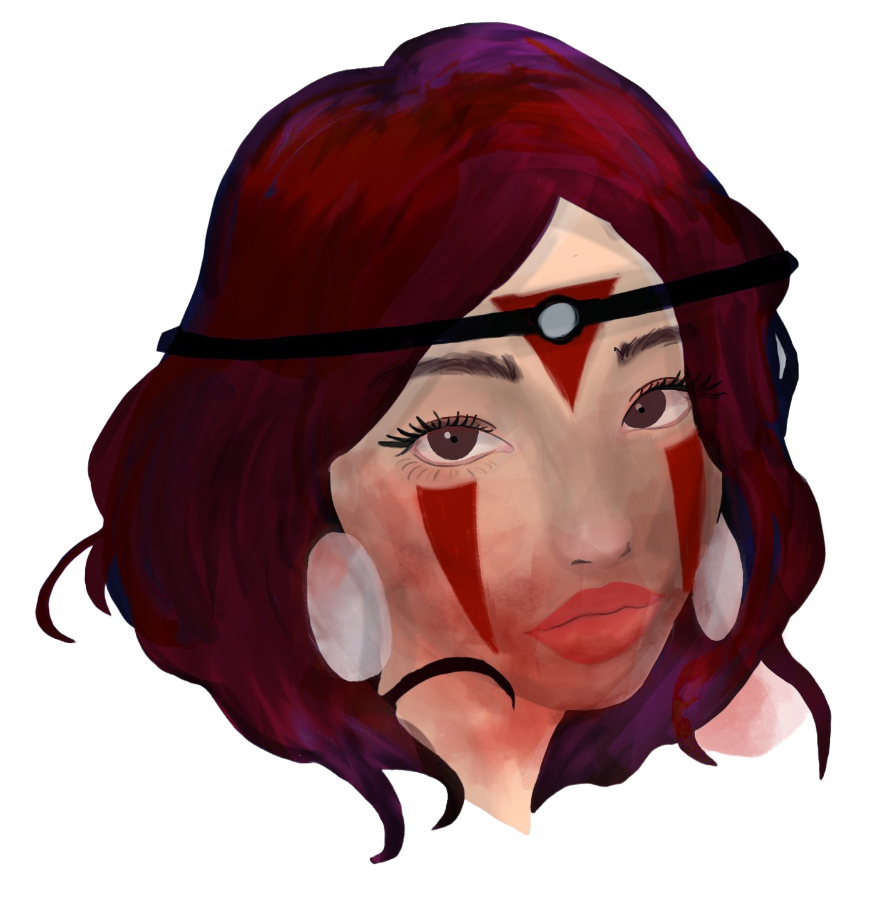
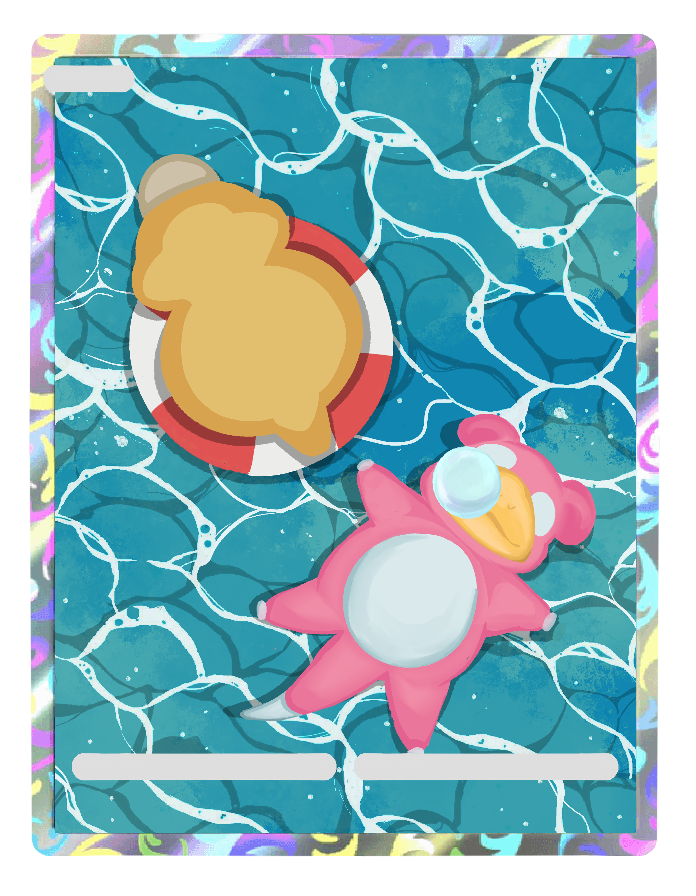
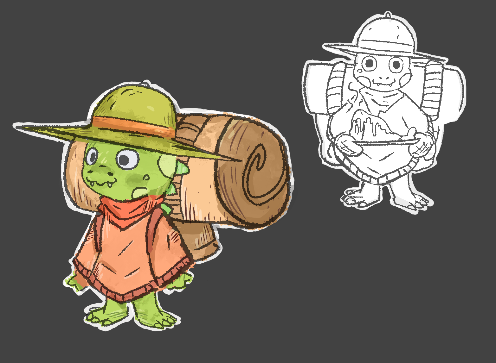
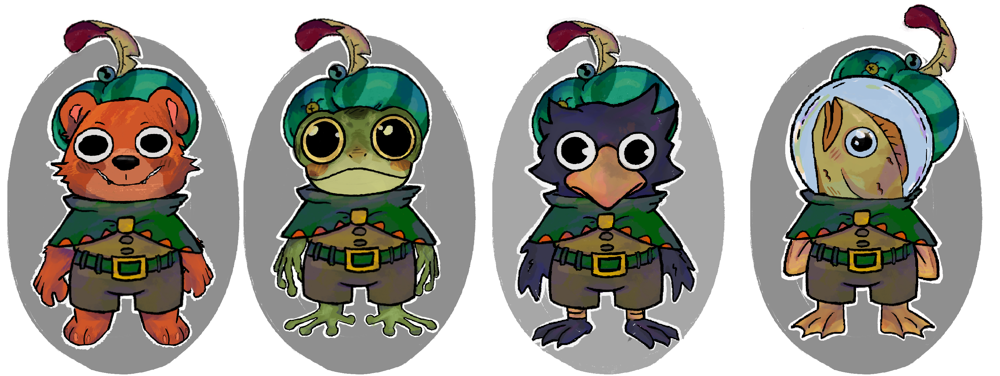
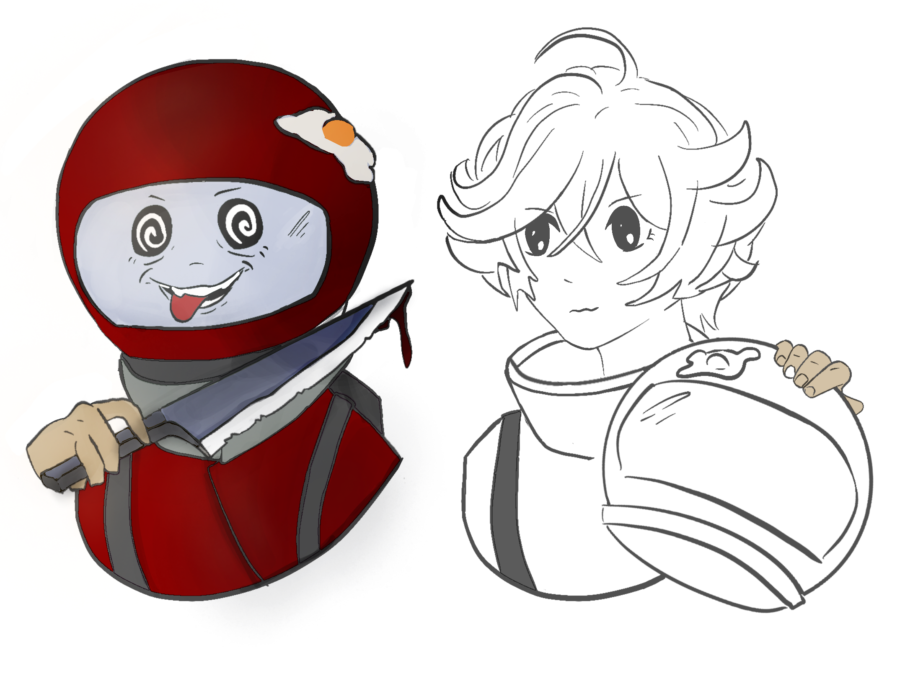
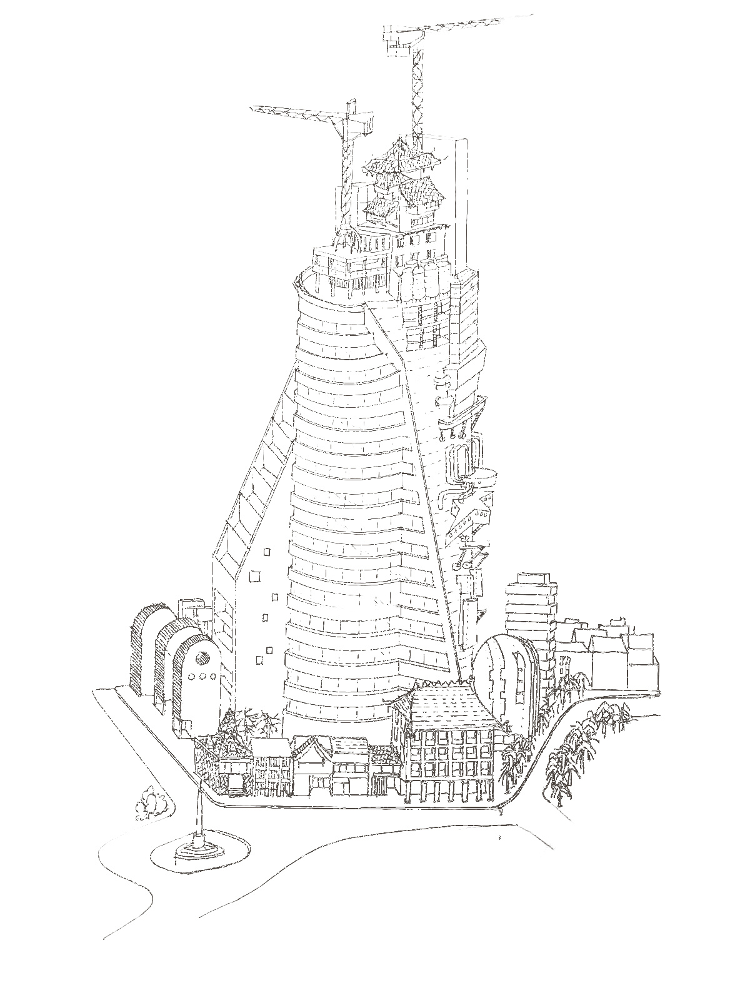
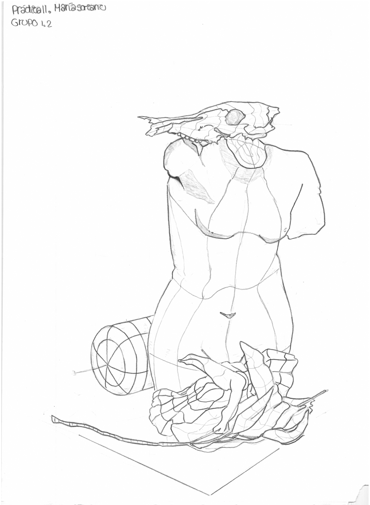

Original Character Designs
Character Design
Sunlit Forest
Environment Art
Hatsune Miku
Fan Art / WIP
Princess Mononoke
Portrait Study
A Day at Sea
Pokémon Fan Art
Character Turnarounds
Character Design
Little Animal Characters
Creature Design
The Adventurer Crew
Game Character Design
Character Expressions
Character Design
Architectural Studies
Traditional Art
Traditional Studies
Sketchbook